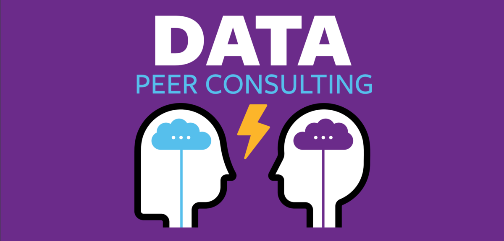

Data Peer Consulting#
Overview#
Data Peer Consulting is a program that supports data science work across campus. The Data Peer Consultants offer meetings with students, post-docs, visiting scholars, and faculty regarding any questions about a data science project. Currently, they primarily serve undergraduate students. There is also a smaller population of Master’s-level and Ph.D. students using their service. They also assist students from undergraduate and graduate-level courses that include a DS Module.
Data Peer Consulting is a program available to the campus population throughout the academic year with an online calendar that displays both the scheduled drop-in times and the peer consultant, along with the designated location on the third floor of the undergraduate library or the online meeting Zoom Link. This project began in Fall 2017 as a collaboration between the [Center for Connected Learning] (the learning floor of spaces in the student library to support varying sensory needs and forms of hands-on learning), [D-Lab], and the Division of Computing, Data Science, and Society. Currently, a total of sixteen students are involved in the program. Two of these students serve as Data Peer Consulting Leads who oversee student meetings and communication. The team lead directly connects with both the program analyst for the UC Berkeley Data Science Undergraduate Studies and the program coordinator as they supervise their peers. All consultants work three hours a week in pairs.
The physical Data Peer Counseling station is set up in the library corner as a table with two individuals within a roped-off area that is perpendicular to the Data Science Peer Advising table. They have clear signage and laptops with them. This resource offers face-to-face meetings between 11am to 4pm Monday through Friday during the academic year. Students can also contact them through their program email to ask about scheduling other appointment times. A consultation typically lasts from fifteen to thirty minutes. Hour-long consultation may occur but are not typical.
Target Audience#
Because the Data Peer Consulting is physically located in a public library space, it can reach the broader campus community of students. The sixteen data peers are undergraduate students that list their coursework online so that other undergraduate students can best match their needs to the data peer. Two Data Peers commented that their primary audience is students who are not majoring in data science. The Data Peer Consulting program aims to support students from a wide range of domains who have data science questions.
Goals#
Overall, the primary goal of Data Peers is to support students’ data science work across campus. Data Peers is a drop-in support network for undergraduate, graduate, and faculty using data sciences in their research. This program allows for further assistance in data science for students from diverse domains who may be using data science in their coursework but do not yet understand the methodological framework.
This program offers a pathway to leadership in data science consultation. Students begin with specific coursework, then have the opportunity to work closely with the campus community. Students have hands-on experience that can build students’ resumes, offer course credit, and then a paid position through increased leadership.
Pedagogical and Curricular Strategies#
The conceptual framework for this program includes:
Near Peer Learning
Self-directed learning
Crossover learning (the library as an informal space),
Distributed Learning Environments (practice across time and physical areas, see Roediger III & Pyc, 2012)
As part of their training, the Data Peer student consultants all enroll in a pedagogical course, DATA-198 (a curriculum developed from combining multiple student-led DeCal courses that the students offered simultaneously covering similar material), that the DS Modules Program Coordinator teaches. The students are instructed broadly on education including the importance of Maslow’s hierarchy of needs and a specific session on critical education. Students gain hands-on work experience in the consultations.
There are two components to this course: the workshop and the application. Workshops aim to be thought-provoking and relevant. Students assess the value of workshop content afterward to improve future iterations. It is planned to be 7 to 8 weeks of curriculum. The course has a standard pedagogy and focuses on learning outcomes. The work is data science-specific including tips and tricks for Jupyter Notebooks, recommended Python libraries, and content on ethics. Discussions include challenges and opportunities in having open-ended conversations about data and how students can respond to them during consultations.
The program uses a Slack Channel to communicate about common questions when they need assistance from other Data Peers. The students participate as part of the course the first year and receive pay for subsequent semesters.
Key Diversity and Inclusion Practices and Strategies#
As part of the DATA-198 course, students learn about stereotype threat, imposter syndrome, and tone of setting their learning environment. Many students express their desire to become involved because they want to join the existing community space of the Division of Computing, Data Science, and Society.
Cyber Resources#
Students collect records regarding consultations as people drop-in. The service user fills out a form online. Consultees enter their names, department, the time, the kind of question they need assistance with, and other similar consultation demographics.
Links to Key Documents#
[Data Peer Consulting] UC Berkeley webpage
[Data Peer Consulting Office of Research & Scholarship Information webpage]
[Syllabus for DATA-198: Instructional Support Seminar]
The DS Modules Program coordinator developed this course using [Teaching Tech Together] and [Carpentries].
Instructional Google Slides
The Advanced Jupyter Notebook workshop is done entirely from the [GitHub repository].
[Student feedback form] (Spring 2020). We also have feedback for 2 to 3 other semesters, if helpful.
The [DSEP Curriculum Guide Jupyter Book] helps staff/student interns create or work on data-driven courses or modules. Two student interns are updating it.
Program email: [ ds-peer-consulting@berkeley.edu]
Program Description#
The Data Peer Consulting program provides students and faculty across campus assistance with data science work through a drop-in table at the undergraduate student library. Data Peers all take a foundational course that transitions them into developing consultation and teaching skills. During the course session, they work as a data consultant and are eligible to receive compensation in subsequent semesters. All of the consultants connect through a Slack channel where they can share questions and answers about consultation sessions.
Individuals can also request a time outside of the drop-in sessions for a consultation. Consultations generally last from fifteen minutes to one hour. This service does not cover material of substantial depth but assists in getting people “unstuck” in their data science work. Data Peer Consulting is one of the many opportunities in data science programming at UC Berkeley where students can gain hands-on skills using and trouble-shooting data science issues on campus. They had about 100 help requests last year.
Best Practices for Variation Across Institutions#
Other institutions need to think critically about how to train the data peers (the use of DATA-198 materials). They can ensure the compatibility of the training material content by updating them to fit their student audience best.
Other institutions should be aware of the specific gaps that this program can fill for their institution. Building a working relationship with departments, data science courses, and faculty is important. Relationships with faculty allow for a smoother connection as the institution uses the program as a broad resource.